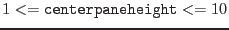

| Parameter | Mand | Type | Default | Constraints |
| tables | yes | list | | table specifier |
a specifier which must point to a list of EPIC tables in a data set.
|
| calindexsets | yes | list | | list of ccf files |
List of calibration index files.
|
| centerpaneheight | no | integer | 8 |
 |
initial height of
central pane
in units of initially visible column buttons; if the input table contains more
than the specified number of columns a scrollbar will be provided with
which the invisible portions of the pane can be brought into view.
|
| Parameter | Mand | Type | Default | Constraints |